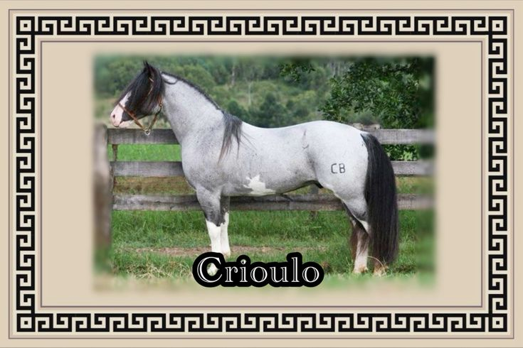
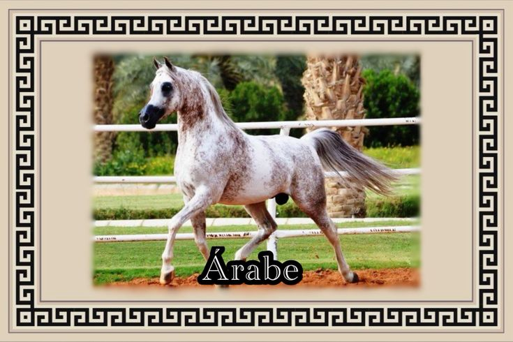
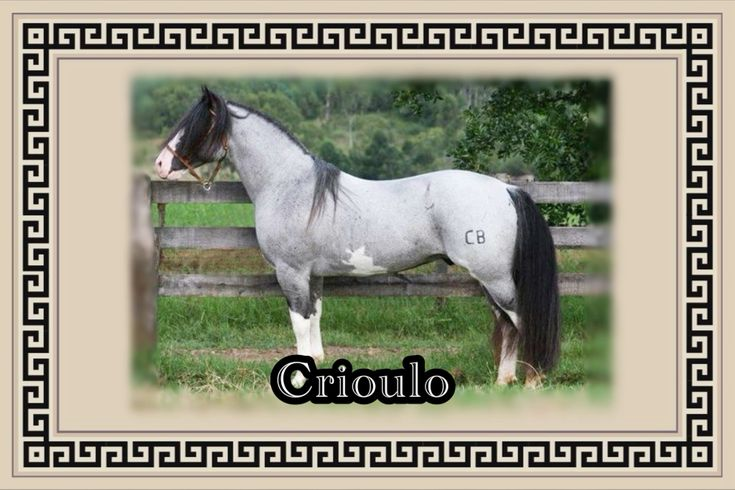
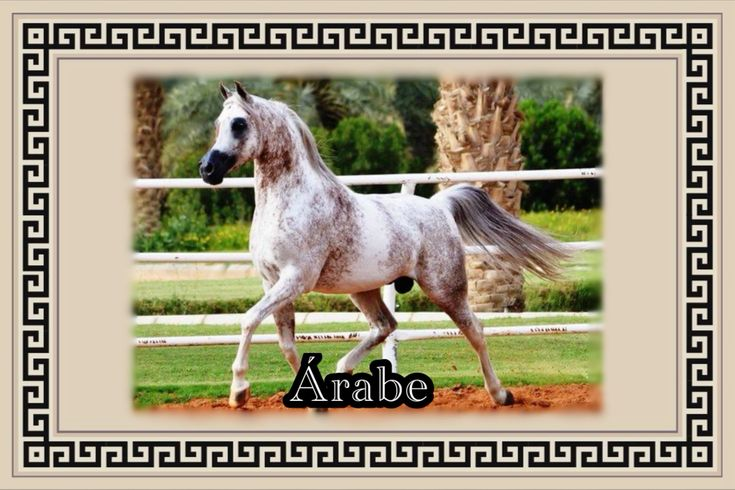
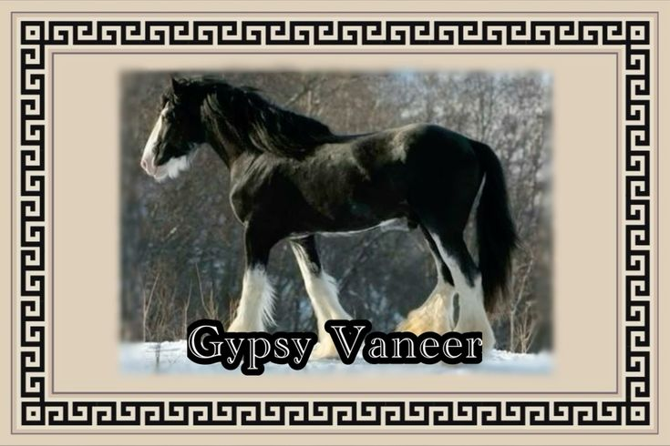
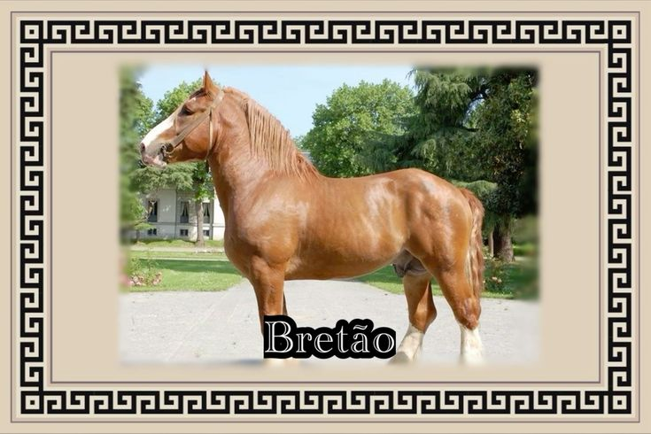
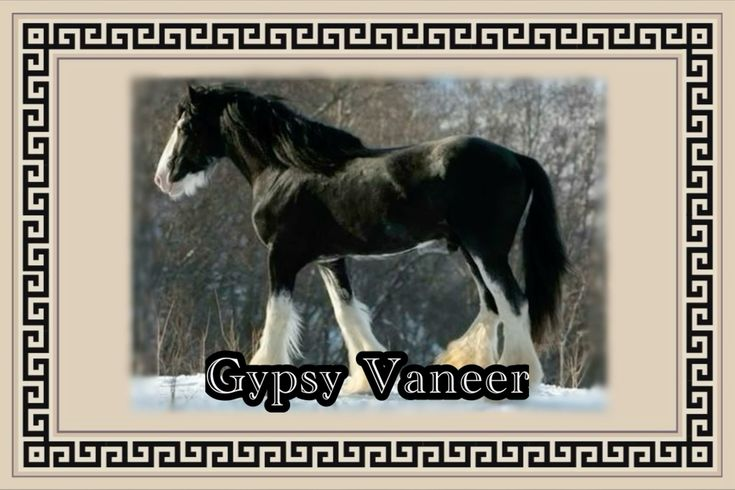
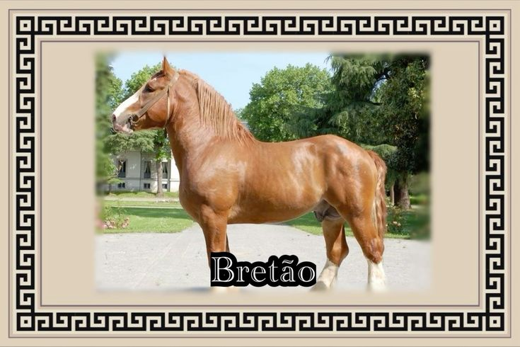
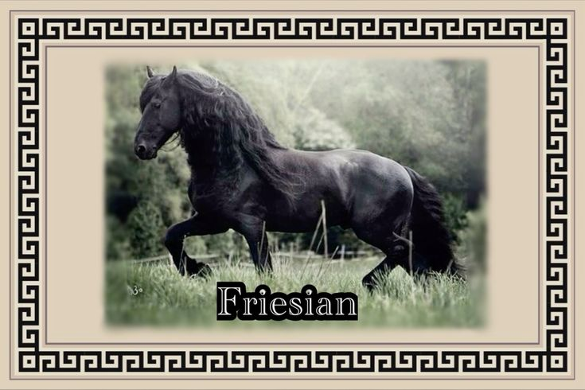
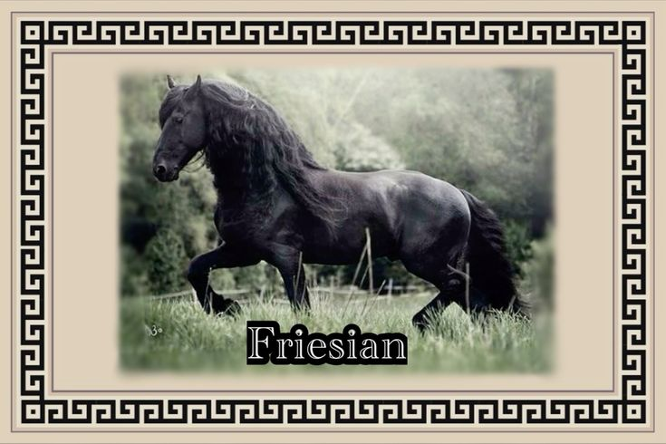

Sobre Cavalos
O cavalo faz parte das subespécies de "Equus ferus". É um mamífero terrestre ungulado (possui cascos) com um número ímpar de dedos nas patas (Perissodáctilo) que pertence á família taxonômica Equidae. Essa espécie evoluiu entre 45 milhões a 55 milhões de anos, sendo parente do pequeno Eohippus, ou, Cavalo do Amanhecer.
Esses animais vivem em média 25 a 30 anos, e claro que o cuidado com a saúde deles tem um impacto importante em suas vidas. Com isso, gostaria de apresentar algumas doenças regulares em cavalos.
Doenças Comuns
Raiva
É um vírus mortal transmitido para esses animais pela mordida de seres que se alimentam de sangue -hematófagos- ou não, podendo ser gambás, morcegos, raposas, etc. Outra forma de contágio é com o contato da saliva de animais infectados em cortes ou mucosas. Os sinais clínicos da raiva em quinos podem surgir depois de duas semanas, o vírus continua a se replicar pelos nervos próximos ao local da mordida e sangue até o cérebro.
Sinais Clínicos:
Alteração comportamental;
Dificuldade para urinar, com possível presença de dor;
Diminuição da fome;
Claudicação;
Mudanças neurológicas;
Paralisia e falta de coordenação;
O cavalo pode pressionar a cabeça;
Presença de ereção constante sem atividade sexual.
Tratamentos:
A vacinação anual é ideal para previnir o desenvolvimento da patologia em animais sadios. O manejo sanitário apoia a aplicação da primeira dose no potro com 3 ou 4 meses de vida. A próxima dose é com um ano, seguido pelo reforço anual ao longo da vida.
Encefalomielite
Uma doença de etiologia viral cujos reservatórios são aves, roedores e répteis. A sua transmissão se dá por picada de mosquitos. Esta doença tem três variedades: a encefalomielite equina do leste (EEE), a encefalomielite equina do oeste (WEE) e a encefalomielite equina venezuelana (VEE), todas presentes no continente americano e provocadas por vírus do tipo Alphavirus, se manifestando de formas diferentes dependendo do tipo de vírus envolvido e a área afetada do sistema nervoso cental do equino.
Sinais Clínicos:
Febre alta;
O cavalo deixa de comer;
Aparece uma depressão no animal;
A sua cabeça mostra uma posição caída em relação ao corpo;
Os lábios ficam flácidos;
A visão se altera;
Deixa as patas afastadas umas das outras;
Movimentos involuntários (como resultado de uma inflamação no cérebro);
Aparecem a ataxia, paraxia e paralisia;
Por fim o animal se deita, sofre uma convulsão e morre.
Tratamentos
A precaução principal é a vacinação anual. A primeira dose do potro deve ser entorno dos 3,4 e 6 meses, depois o reforço anual.
Influenza (Gripe Equina)
Causada por vírus, ela é altamente contagiosa. Afeta as vias aéreas, incluindo o nariz, boca, garganta e pulmões. A infecção primária ocorre no epitélio pulmonar e dentro de 48 horas ele provoca descamação no epitélio pulmonar.
Sinais Clínicos
Hipertermia;
Letargia;
Febre;
Anorexia;
Secreção nasal serosa;
Tosse seca.
Mormo
Doença causada por bactéria, ela não possui tratamento e nem vacina eficaz (pode passar para seres humanos). Portanto a unica precaução é justamente os exames periódicos, podendo ou não apresentar sintomas.
Sinais Clínicos
Corrimento nasal purulento;
Nódulos no nariz, pulmões e gânglios linfáticos;
Febre;
Fraqueza.
Anemia Infecciosa Equina (AIE)
Mais um vírus que causa uma doença perigosa. Por não possuir vacina ou tratamento, a prevenção ocorre por exames periódicos. Essa doença não apresenta sempre sintomas, porém em alguns exames podem haver resultados.
Sinais Clínicos
Febre;
Perda de peso;
Cansaço excessivo;
Anemia.
Cólica Equina (Abdômen Agudo)
A cólica é uma desordem do sistema digestivo comumente observada em cavalos. Suas causas podem ser variadas e até que se possa chegar a um diagnóstico da causa da dor abdominal vários parâmetros precisam ser avaliados. O desconforto causado pode ser leve ou intenso, porém, se não for tratado da maneira correta, o animal poderá ir ao óbito.
Sinais Clínicos
Dor abdominal;
Inquietação;
Sudorese;
Febre;
Alterações da postura;
Coloração das mucosas;
Aumento na frequência do pulso e da respiração.
Tratamentos
O tratamento vai depender do tipo de lesão, eliminando a causa e aliviando a dor. O animal deve ser avaliado por especialistas.
Tempo gestacional nos animais
Normalmente dura cerca de 11 meses, entre 330 e 350 dias, a gestação das éguas exige uma atenção especial dos criadores.
Fatores que influenciam
Raças puras tem período maior;
Gemelaridade: menor tempo;
Idade da mãe: quanto mais velhas, maior período gestacional;
Sexo do feto: machos tem um período maior (monotocas);
Estação do ano: maior disponibilidade alimentar, menor tempo de gestação;
Quanto maior a quantidade e tamanho de fetos, menor o tempo de gestação.
Raças:


 



 



 
